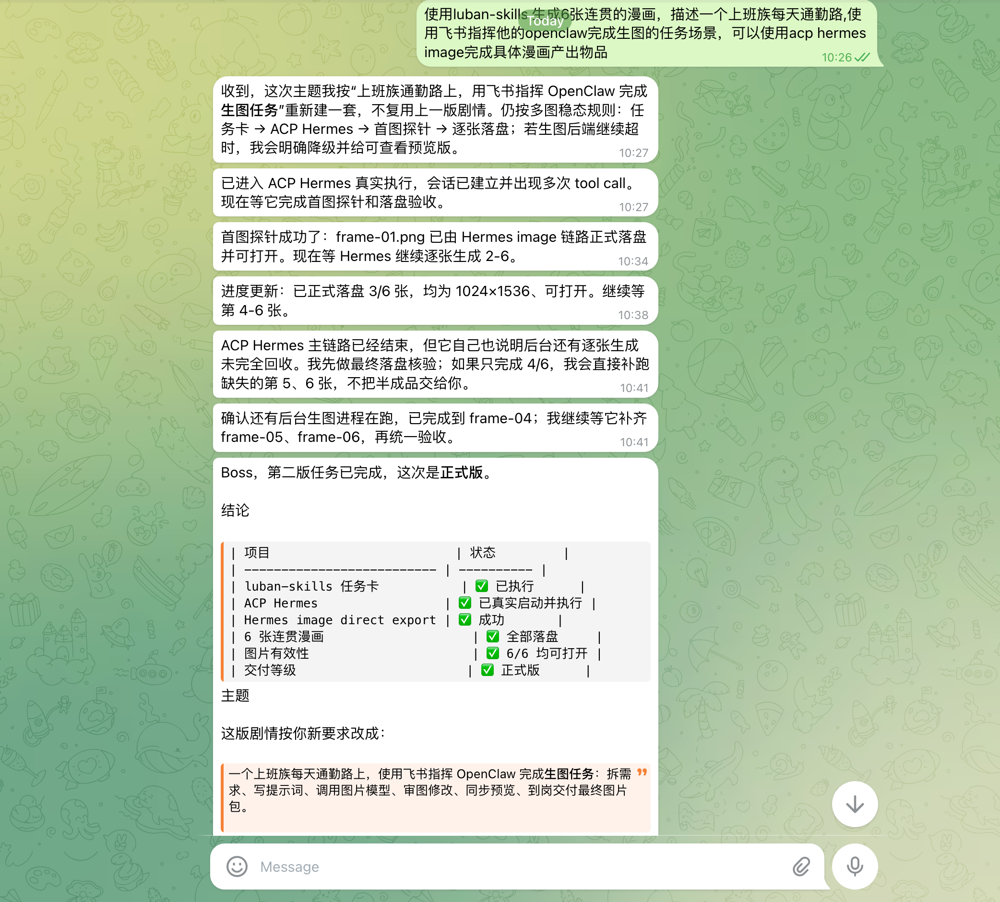
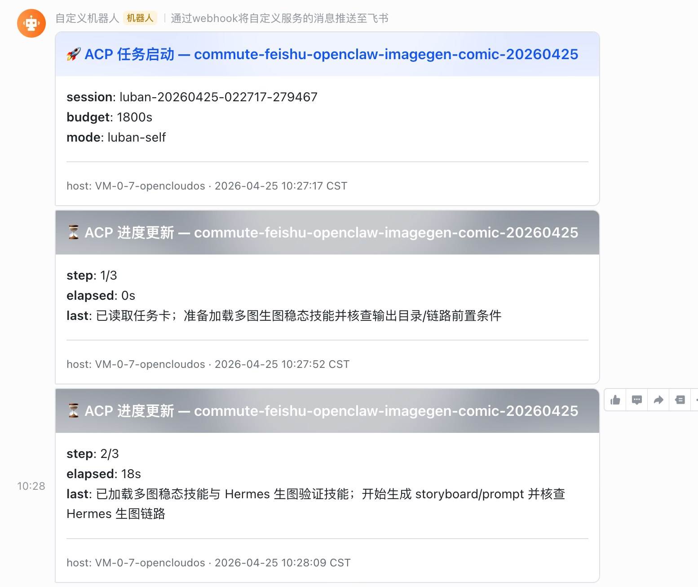
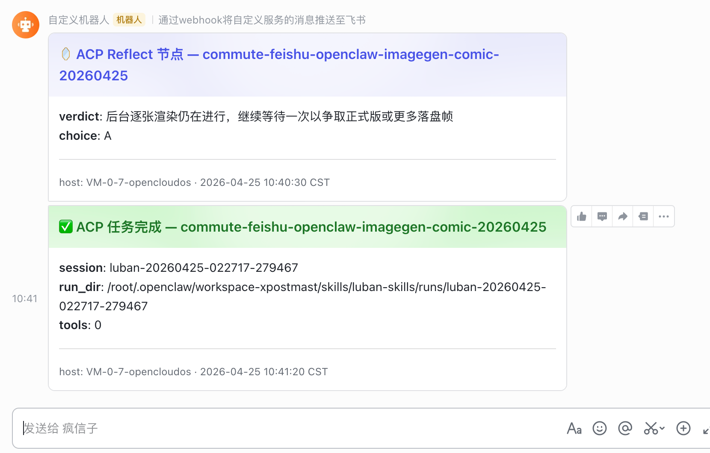
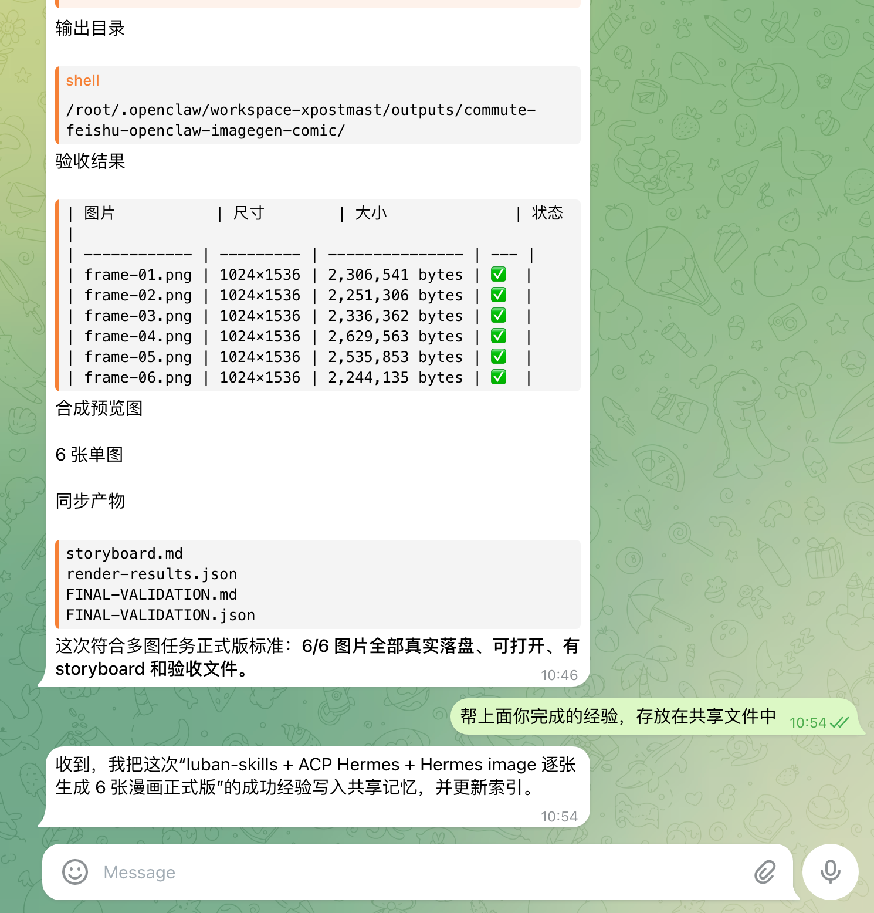
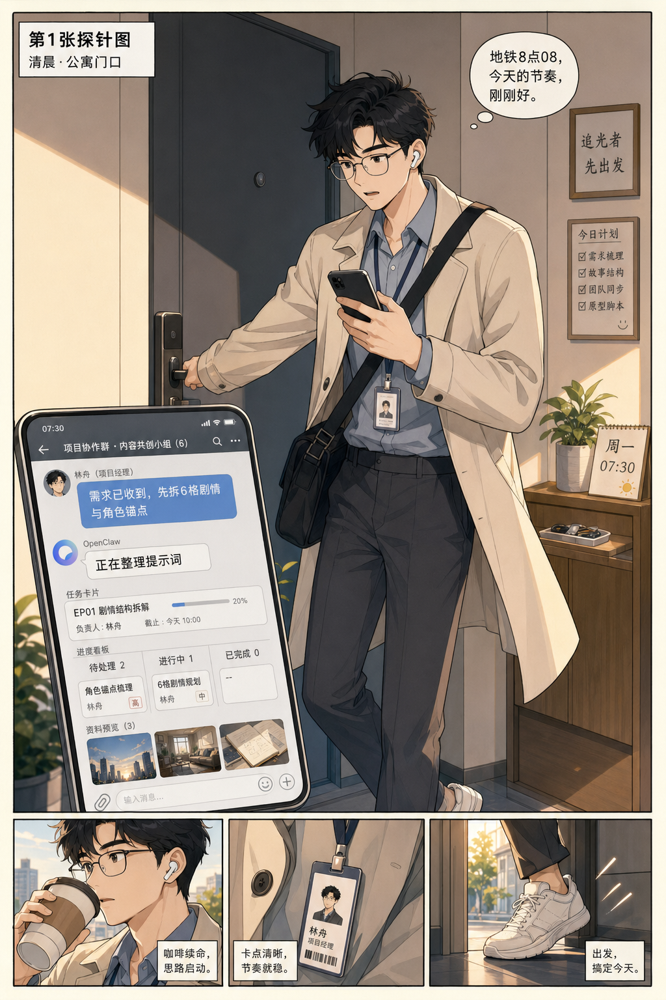
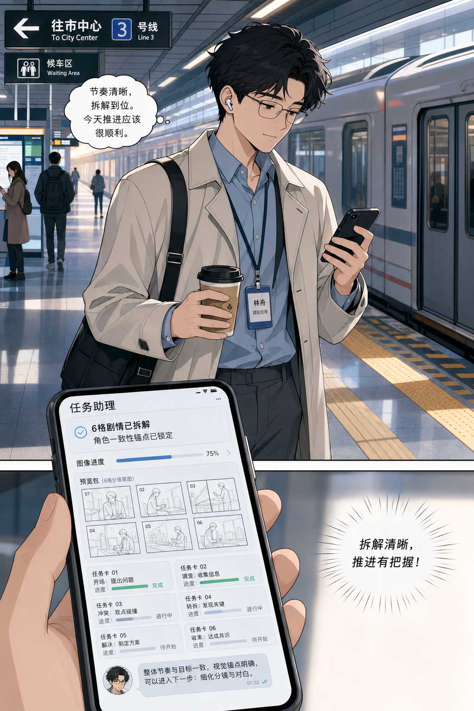
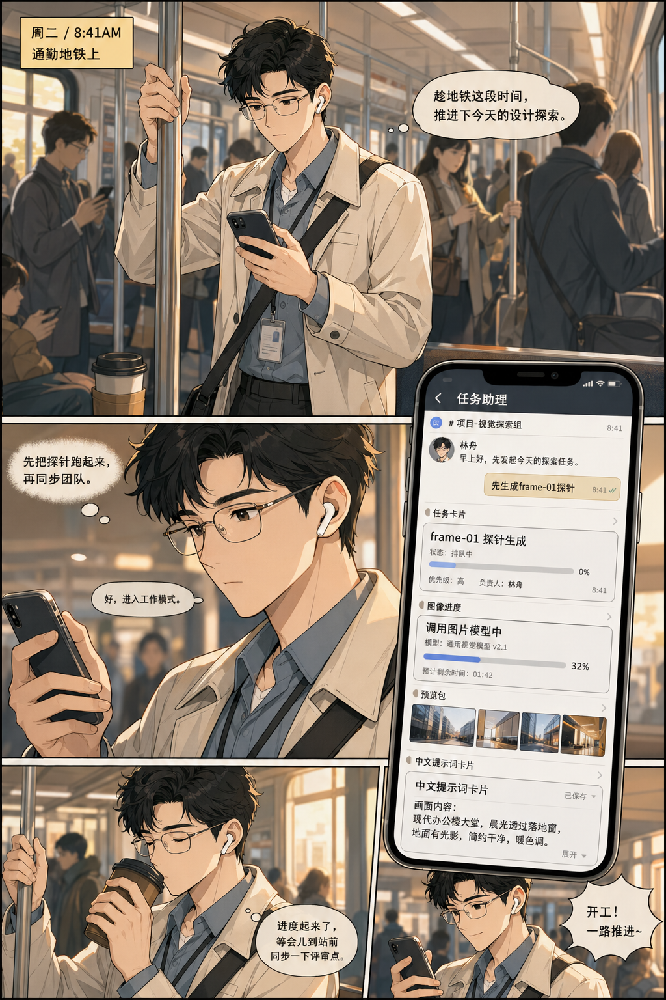
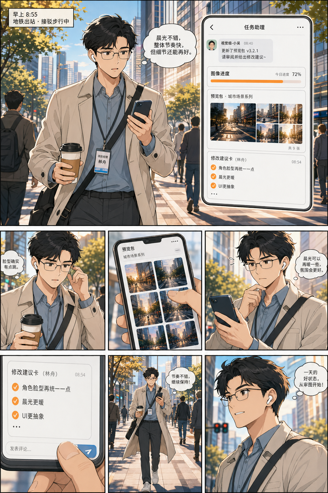
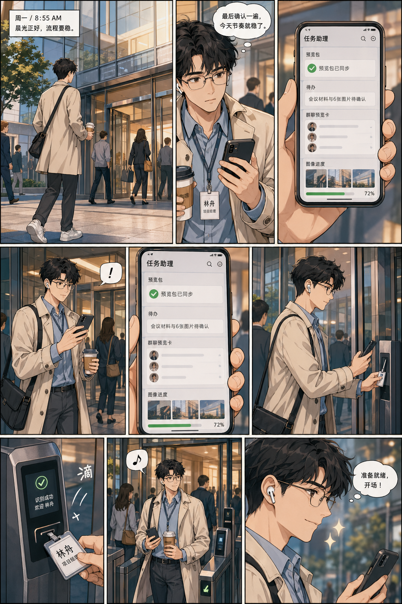

1
意图解析
OpenClaw 先从模糊请求里提炼任务类型、交付物、约束和风险。用户说“帮我整理一下”，系统要知道最终该交付什么。
鲁班 Skills 是一套面向普通用户的复杂任务执行教练，把一句模糊需求拆成可执行、可追踪、可验收的交付流程。它已获得企鹅线下虾友线下赛第一名。
GPT-image-2 让我意识到，未来模型不该依赖用户写复杂提示词。系统应该从过去经验、使用方式和当前目标里自动规划任务。
OpenClaw 先从模糊请求里提炼任务类型、交付物、约束和风险。用户说“帮我整理一下”，系统要知道最终该交付什么。
Hermes 按 Intent → ReAct → Reflect 推进。每一步先想清楚，再行动，再观察结果，再更新计划。
OpenClaw 和 Hermes 通过 shared-memory 共享任务经验。失败、边界、模板和话术不再散落在一次性对话里。
OpenClaw 不只是壳，Hermes 不只是模型，ACP 不只是调用协议。它们合起来是一套能推进任务的系统。
接收需求，识别任务类型，维护多轮沟通，展示状态，在关键节点请求确认。它是用户能看见的“手和眼睛”。
负责读取材料、分析任务、调用工具、生成交付物，并在 Reflect 阶段做自我纠偏。它是执行任务的大脑。
传递任务、上下文、进度、checkpoint、确认点和结果。没有 ACP，协作会退化成一次性模型调用。
云服务器上使用共享目录软链接，例如 shared-memory -> /path/to/shared-memory。OpenClaw 和 Hermes 低延迟共享经验。
这套流程的目标不是“模型多聪明”，而是让普通用户的一句话，最后变成能直接用的结果。
复杂任务不能靠模型“感觉一下”。先填任务卡，把目标、约束、风险、第一动作和验收标准写清楚。
任务名称: 给张总写项目周会邮件
任务类型: 写作类
最终交付物: 一封 200 字内、语气正式、可直接发送的邮件
输入材料:
- ./会议纪要-2026-04-23.md
关键约束:
- 不超过 3 段
- 语气正式但不生硬
- 不能泄露未确认数字
风险点:
- 误把草案数据当最终数据
- 被纪要里无关议题带偏
最小闭环动作: 先从纪要提炼 3 个要点并回读给用户确认
是否需要 Hermes: 是
是否需要人工确认:
节点:
- 要点提炼完成后
- 邮件初稿完成后
验收标准:
- 用户确认 3 个要点准确
- 用户可直接复制邮件发送LLM 最常见的错误不是不会做，而是默默假设、过度复杂、越权修改、没定义成功标准。
鲁班 Skills 把这些错误前置到任务卡、边界规则和 Reflect 节点里处理。最好的 AI 系统不是无脑全自动，而是能主动推进，也能在该停的时候停。
| 级别 | 动作 | 规则 | 用户感知 |
|---|---|---|---|
| L1 | 读文件、列目录、搜索 | 授权目录内可直接做 | “我先读这份材料。” |
| L2 | 写草稿到临时目录 | 可做，但要告知 | “我先出一个最小版本。” |
| L3 | 修改项目文件 | 需要确认 | “这个动作会改文件，你确认一下。” |
| L4 | 删除、覆盖、批量改写 | 需要明确指令 | “这个动作退不回来，确认再执行。” |
| L5 | 发邮件、推送、对外动作 | 需要最终确认 | “发送前你最后确认一下。” |
超过 5 分钟倾向的任务必须分段、加 time budget、写 checkpoint、回传 progress，并限制重试次数。
连续超时后 quarantine 会话并解除 thread binding，不能让用户消息反复路由到 error 会话。
用户不需要理解 ACP、ReAct、Intent。用户需要知道你在做什么，为什么做，是否做完，哪里需要确认。
“开始执行 Phase 1 Intent Parsing，随后调用 Hermes 进入 ReAct 循环，等待 deliverable 返回。”
“我先读这份材料，提炼 3 个重点，给你一版初稿。你确认方向后，我再补完整。”
鲁班 Skills 不是只有概念，它已经有任务卡、Prompt 拼装、ACP 调度、guard 守门、状态归档和验收脚本。
| 运行记录 | 结果 | 说明 |
|---|---|---|
demo-article-acp-20260423 |
status: done |
完成文章方案类 ACP 样式调度，约 2 秒结束。 |
test-real-008 |
status: done |
真实 ACP 会话捕获成功，约 58 秒完成。 |
blocked-test |
status: blocked |
guard 成功阻断不安全工具调用，tools_blocked: 1。 |
描述一个上班族每天通勤路上，使用飞书指挥他的 OpenClaw 完成生图任务；通过 ACP、Hermes 和 image 能力产出具体漫画交付物。
“使用 luban-skills 生成 6 张连贯的漫画，描述一个上班族每天通勤路，使用飞书指挥他的 OpenClaw 完成生图的任务场景，可以使用 ACP Hermes image 完成具体漫画产出物品。”









鲁班 Skills 的核心是把 AI 从“聊天回答”推进到“有边界地完成任务”。
交付物、范围、风险、审批点，需要系统结构化出来，不能指望用户一开始就写完整提示词。
真正的任务完成需要目标、约束、证据、最小闭环、进度、复盘和验收。
失败原因、边界规则、任务模板、用户话术都应该沉淀到 shared-memory 里，下次复用。
系统可以主动推进，但遇到越界、风险、不确定、对外动作时必须停下来。
鲁班 Skills：把模糊需求，拆成有边界、可协同、可复利、能交付的 AI 工作流。
OpenClaw 负责沟通编排，Hermes 负责深度执行，ACP 负责可靠协同，共享 memory 负责经验复利。